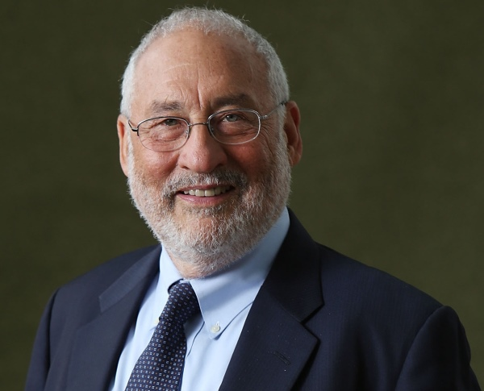

2015-01-06 12:25:00
我在前文《一戰和冷戰》中提到，當今美國經濟學界已經完全腐化，只有哥倫比亞大學的两位教授還能堅持理性、良知和實用性。《一戰和冷戰》是Jeffrey Sachs的回憶自白，而這裡我想討論的是昨天見報的一則有關Joseph Stiglitz的消息。不過這件事專業性比較高，所以我會先給些背景資料。

Joseph Stiglitz，著名經濟學家，甫卸任國際經濟協會總裁。在高盛利益集團前，他的良心話有如螳臂擋車。
美國的官僚體系並不是仔細考慮設計後的產物，而是在歷史上不同時代有緊急需要下所建立的個别機關叠加累積的結果。在國會制度下，一個機關建立之後，基本上很難取消，所以百年下來，整個體系就叠床架屋，紛亂無章。在金融管理上，一般銀行存放款業務由聯凖會（Federal Reserve）監管，股票交易卻是SEC（Securities and Exchange Commission，證卷交易監管局）的職權，而期貨和其它的金融衍生品，包括股票的衍生品，則歸CFTC（Commodity Futures Trading Commission，商品期貨交易委員會）來管。此外，各交易所和半官方的銀行聯盟也都有法律上監督銀行的權利。所以，同一個部門，甚至同一筆交易，常常要接受好幾個不同的機關的“監督”；實際上是大家都有權管，一但出了事，没人有責任。
其實這類官僚體系有權無責、效率低下的現象，全世界到處都是，我也不想深責。真正的腐敗是官方為了少數人的利益，故意扭曲規則，損害整個市場和經濟的公平運作。Stiglitz是諾貝爾獎得主，一向拒絶大公司和銀行的收買，雖然對這些腐敗的現象不是像我這様深惡痛絶、經常性地吐槽，但是如果被要求來做評估或建議，卻也不會像Lawrence Summers（前美國財政部長、前哈佛大學校長）那様屈於權勢、言不由衷。而這次的新聞，就是源自他對電腦交易的批評。
近年來，美國的金融交易逐步自動化，到目前已經有90%以上的交易是由電腦自動產生。對股票有興趣的讀者或許會覺得奇怪，股票的估價是很複雜困難的，所謂的股票分析師基本上100%都是自欺欺人的騙人把戲，電腦怎麼能有那麼高的智商來估出更精確的價位來呢？其實推動股票價格漲跌的消息，可以分成三類：A）影響整個工業的大新聞，B）公司自己内部的財務消息，和C）大投資人（如Mutual Fund共同基金和Pension Fund養老基金）的大筆買賣。A項一般是很難操弄的，B項需要人為的非法内線交易，主要是由康乃迪克州的幾個對衝基金（Hedge Fund）來搞，電腦對這個不在行。它要賺銭，是專注在C項：當大投資人下了一筆單子到某個交易所之後，電腦識别出來，馬上到所有其他的交易所搶先下單。所以電腦的利潤靠的是三件事：1）分裂的市場，2）私有的管道，和3）超人的速度。20年前美國股票99%的交易量集中在两個交易所，現在則有20多個交易中心，基本上每個大銀行都有它自己的交易中心。大投資人的單子油水豐厚，各銀行都有幾百名業務員和億元級的預算專職伺候這些客户，請他們對單子被刮的事睁一隻眼閉一隻眼。為了怕被别人搶先下單，每個銀行必須每年花費幾千萬美元來為電腦增速，例如2012年有家金融公司為了讓芝加哥交易所到紐約交易所之間的光纖跑得比競争對手快，特别自己拉了一條新的直線線路，節省了千分之四秒的訊號時間。至於開發自己的晶片和網絡交換機來節省百萬分之一秒的反應時間，更是家常便飯。因此美國金融界把電腦的自動化交易叫做High Frequency Trading（HFT，高頻交易）。
我還在金融界任職時，HFT每年從大投資人的交易裡擠出近100億美元的利潤，大約是内線交易的两倍。這其實是為什麼年復一年，美國的共同基金絶大多數表現劣於整體市場（Underperform the Market）的主因（在2000年代電腦化之前，這種Front Running搶跑戰術是靠手控的），最後吃虧的當然是小投資人。不過這並不是Stiglitz批評HFT的原因。我在前文《美元的金融霸權》已經解釋過，西方經濟學認為攔路打劫只是財富轉移，對國家的財富總量没有直接的影響；只有對整體財富有負面影響的，例如打劫之後還殺人放火，才是不好的事。所以Stiglitz關心的，是HFT裡大家一窝蜂搶先下單所帶來的市場風険。2010年五月6日，一家金融公司送出錯誤的賣單，所有的銀行都在千分之一秒内抽回所有的買單，大家搶著賣，五分鍾内道瓊指數就跌了1000點，至今仍是歷史上單日跌幅最高的紀錄。這個事件叫做“Flash Crash”（“閃崩”）。其後，類似的事件又發生了好幾次，只不過没有像2010年那様横跨市場，而是專注在一两支股票上。
閃崩之後，SEC受輿論壓力，必須有所反應。但是拖拖拉拉了將近五年，一個專家小組到現在還是難產，這主要是因為銀行界不捨得放棄那每年100億美元的利潤。昨天的消息是Stiglitz因為主張對HFT征税，被正式踢出了那個小組。我自己在十幾年前也有類似的經歷：那時我的新Trading Desk（交易部門）和高盛有競争，結果不到一年就收到SEC的一張通知，把我們的交易禁了；高盛的交易雖然本質上一様，但是在企業結構上自然有不同，SEC硬是說高盛可以因此而做它的獨家生意。高盛對美國財政部、聯準會和其他有關金融的機關，都有極大的控制力，但是對SEC的掌控已經到了可笑的地步。我在前文《美元的金融霸權》提過一個SEC的中級官員，Carmen Segarra，就是因為不了解誰是幕後的老板，對高盛不够卑躬屈膝，而馬上就被開除了。她還以為把整件事的錄音公布出來，會引起公憤，結果卻只是讓金融界對高盛更加敬畏。
高盛就是一個典型的貪腐利益集團。和其他國家的貪腐利益集團相比，真正的不同在於主導這個集團的不是政府高級官員，而是民間的金主。當貪腐利益集團是由政府官員主控時，企業界還有平等的行賄機會；而美式的金主貪腐卻是絶對不平等的。此外，政府官員主控的貪腐是非法的，只要高層領導有能力、有決心，還可以依法鏟除；而美式的金主貪腐卻是完全合法的，根本没有改善的機制或可能性。這也正是美式民主的真諦：主子的確是民間的，只不過不是全民，而是極少數的特權階級。可笑的是，大多數的美國人和許多發展中國家的民主鬥士，到現在還以這個制度自豪。爱因斯坦曾說：“Only two things are infinite, the universe and human stupidity, and I'm not sure about the former”（“只有兩件事情是無限的，宇宙和人類的愚蠢，而前者不一定是無限的”），對美國人來說是很貼切的。